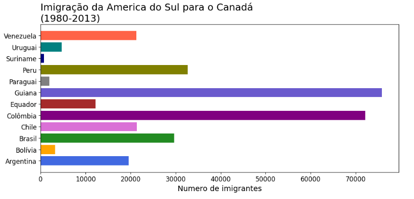

Douglas Ramos Charqueiro
Endereço: Carvoeira - Florianópolis - SC
Telefone: (55) 99189-3927
E-mail: douglas.ramos@acad.ufsm.br


Sobre
Sou um profissional de tecnologia com paixão por desenvolvimento de software e aprendizado contínuo. Atualmente trabalho como Técnico em Eletrotécnica na Justiça Federal de Santa Catarina, com foco em automação industrial. Sou graduando em Ciência da Computação pela UNISUL e possuo experiência em diversos projetos de software e hardware. Sou apaixonado por aprender novas tecnologias e aprimorar minhas habilidades para entregar soluções inovadoras e eficientes.
Experiência Profissional
Técnico em Eletrotécnica
Grupo Setup - Florianópolis, SC
Março de 2024 - Presente
- Realizo manutenção elétrica no Hospital Universitário Polydoro Ernani de São Thiago.
- Atuei na área de Automação Industrial, realizando a gestão e controle do prédio e implementando melhorias no software Envision.
- Experiência prática com sistemas de automação e gerenciamento de infraestrutura.
Estágio em Manutenção Predial e de Computadores
Base Aérea de Santa Maria - Santa Maria, RS
2023
- Adquiri experiência prática em manutenção de infraestrutura predial, incluindo sistemas elétricos e hidráulicos, e em equipamentos de informática.
Formação Acadêmica
Ciências da Computação
Universidade do Sul de Santa Catarina (UNISUL) - Florianópolis, SC
2024 - Cursando
Sistemas de Informação
Universidade Federal de Santa Maria (UFSM) - Santa Maria, RS
2023 - Incompleto
Desenvolvi um projeto de Iniciação Científica sobre Inteligência em Iluminação para Smart Cities, com foco em transmissão de dados e criptografia.
Técnico em Eletrotécnica
Colégio Técnico Industrial de Santa Maria (CTISM/UFSM) - Santa Maria, RS
2020-2023
Ensino Fundamental
Colégio Municipal Miguel Beltrame - Santa Maria, RS
Habilidades
Qualificações
- Domínio em softwares: Pacote Office, Autocad, LogoSoft, FestoFluidSim, CADESIMU, Visual Studio Code, Envision for BACtalk
- Formação complementar em áreas como: Circuitos Digitais, Gestão Industrial e Segurança do Trabalho, Eletrônica, Projetos Elétricos, Desenho Técnico, Tecnologia Mecânica, Sistemas Elétricos de Potência, Circuitos Elétricos, Projetos Fotovoltaicos, Linguagem Python, Linguagem C, Linguagem Front-end (HTML e CSS), Teoria Geral da Administração, Programação I, Circuitos Digitais.
Projetos
Projeto 1: Card-Game-dumb-play 🃏
Eu desenvolvi código em C apresenta a implementação de um jogo de cartas estratégico e tático, onde dois jogadores se enfrentam em uma série de rodadas. Cada jogador recebe uma mão de cartas de um baralho que inclui cartas de diferentes cores e valores. O objetivo é vencer as rodadas acumulando pontos, que são determinados pelo resultado de combates entre as cartas jogadas pelos jogadores.
Este projeto foi um trabalho de Lógica e algoritimo da minha graduação em Sistemas da Informação na Universidade Federal de Santa Maria em 2023.
Tecnologias usadas: C.
Para saber mais acesse o link para o Código-fonte no GitHubProjeto 2: Sistema de Serviços e Consultorias 📊
Este projeto foi um estudo em python que desenvolvi junto ao curso Alura, que apresenta um desenvolvimento por meio de graficos e comparações, fazendo ciencia de dados de uma empresa que presta um serviço de consultoria para pessoas que querem imigrar do Brasil para o Canadá. O projeto é para uma empresa fictícia que otimizei os serviços de aconselhamento e consultoria para essas pessoas que desejam fazer imigração.
Tecnologias usadas: Python.
Para saber mais acesse o link para o Código-fonte no GitHub